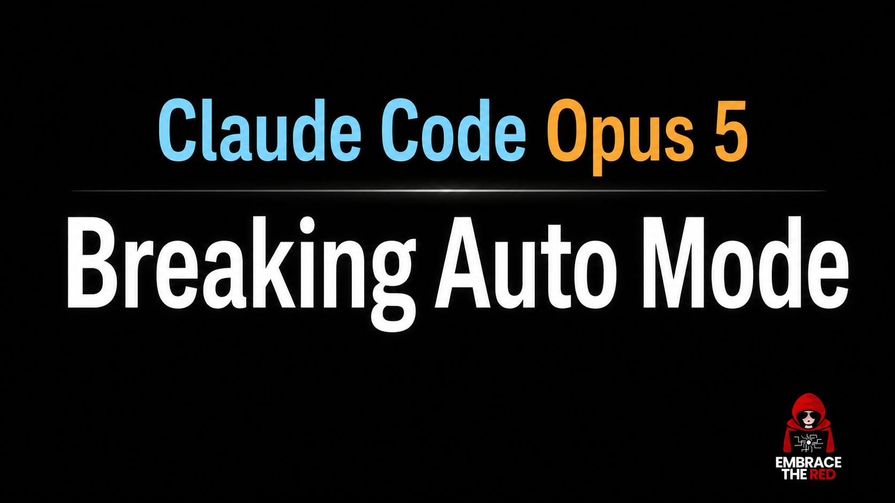
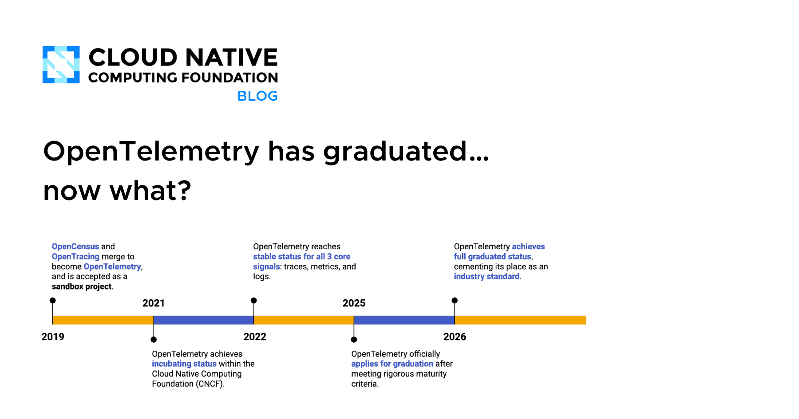
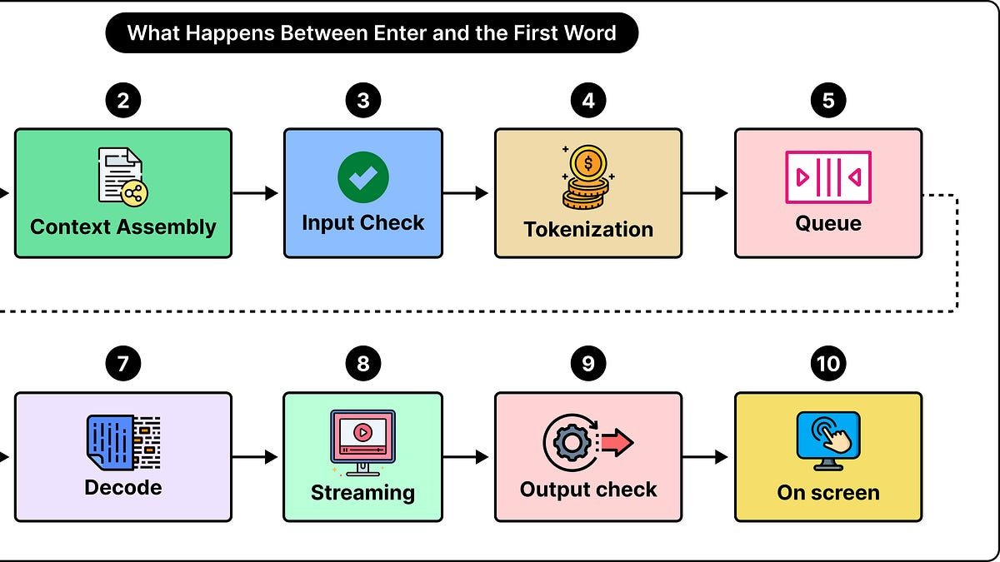
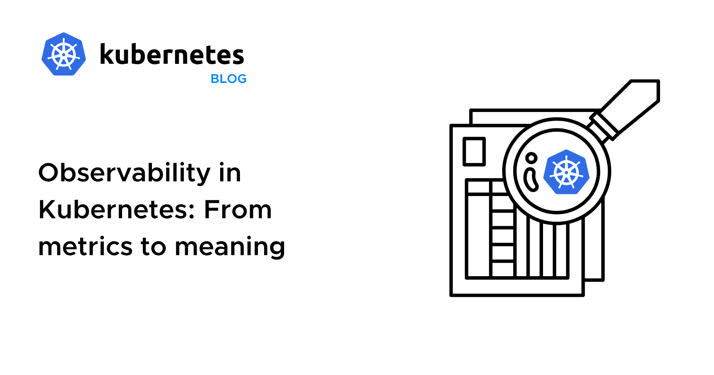
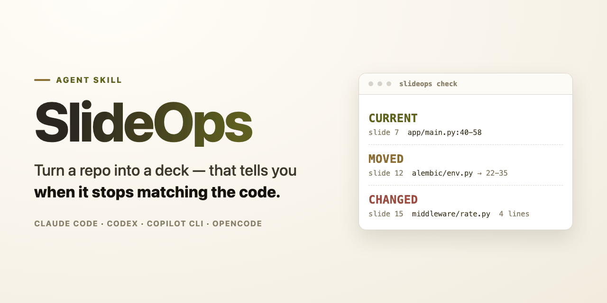

🔥 Top 3 (must read)
Breaking Claude Code Opus 5 Auto Mode
(HN discussion, 397 points) A security researcher shows how Claude Code's auto mode can be pushed into running actions it should have blocked. The post walks through the attack path and what the guardrails miss. Why it matters: if your team runs Claude Code with auto mode in CI or on shared repos, this is the threat model you need to check against today.

August 2026: Flutter 3.47, Dart 3.13, Material and Cupertino Decoupling, Listen Package
Andrea's monthly roundup covers Flutter 3.47 and Dart 3.13, including primary constructors, the split of Material and Cupertino, and the new Listen package. It also covers desktop and web updates and Flutter's path to Swift Package Manager. Why it matters: one page tells you what to test before upgrading your Flutter apps this month.
Claude Code reduces its weekly limit by 17%
(HN discussion, 51 comments) Anthropic cut the weekly usage limit for Claude Code plans. The HN thread has people comparing plans and how they hit the cap. Why it matters: this changes the budget math for a team that leans on Claude Code daily. Worth a short note to your team on usage habits.
🛠 Tools & releases
Kubernetes v1.37: Storage Version Migration enabled by default
the StorageVersionMigration API is GA and on by default. Stale stored object versions get migrated without manual scripts.
K
OpenTelemetry has graduated… now what?
OTel is now a CNCF graduated project, next to Kubernetes and Prometheus. Good signal if you are still choosing a tracing standard.

Introducing wrapture
from the author of wrapt. A Python library that wraps functions for testing and tracing at the same time. Python only, but the idea is useful for anyone who writes test doubles.
S
🤖 AI for developers
What Happens Inside an AI Chatbot Between Enter and the First Word?
ByteByteGo traces one request through the full stack of an LLM chat product. A clear system-design read if you build on LLM APIs.

See Top 3 for the Claude Code auto mode security post and the weekly limit change.
👔 Engineering & teams
Observability in Kubernetes: From metrics to meaning
argues that metrics alone do not explain a request that crosses ingress, services, queues, and storage. Practical for teams setting SRE goals.

🎯 For me
Flutter 3.47 / Dart 3.13 — direct hit on your mobile stack. Check the Material and Cupertino split before you upgrade.
Claude Code auto mode break — you run Claude Code in automation. Audit which permissions auto mode gets in your setups.
Claude Code weekly limit — plan for the smaller cap if your team shares plans.
Kubernetes v1.37 and OTel graduation — both matter for your infra and observability work.
💡 App ideas & indie builds
Serverbox: Linux server management over SSH, written in Rust and Tauri
(HN, 52 comments) — a desktop app for managing servers over SSH. Problem: SSH plus many terminal tabs is slow for small server fleets. Inspiring because it shows a one-person desktop tool can win against big dashboards.
S
SlideOps: slides from a repo that flag when they drift from the code
(HN) — generates slides from a repo and warns when the slides no longer match the code. Problem: onboarding decks go stale. Good pattern for any "docs that check themselves" idea.

Corporate Mind Games: logic puzzles with a sarcastic corporate theme
(HN) — daily logic puzzles wrapped in office humor. Problem: puzzle games feel the same. Shows how a strong theme makes a common format fresh.
C
Markdown Viewer and Editor
(HN) — a simple in-browser Markdown viewer and editor. Problem: opening a .md file should not need an install. A reminder that small, focused web tools still find users.
K
Floe: open-source plugin for sample libraries, CLAP/VST3/AU
(HN) — a free plugin to load and play sample libraries in any DAW. Problem: sample libraries are locked to paid players. A niche with clear pain and a loyal audience.
F
🎓 Try this
Read the Claude Code auto mode security post and then open your own Claude Code settings. List which tools auto mode can run without asking. Remove anything that can push, deploy, or delete. Takes 15 minutes and closes the gap the post describes.